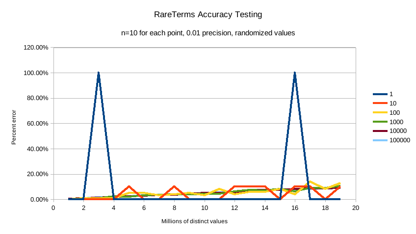
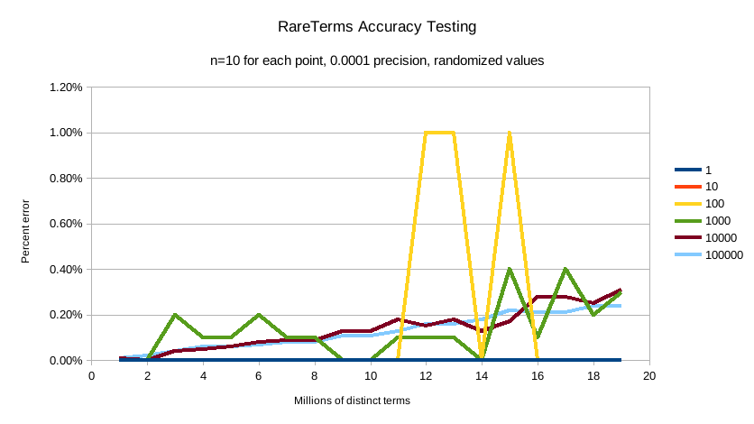

本地英文版地址: ../en/search-aggregations-bucket-rare-terms-aggregation.html
一个多桶聚合，基于值源，用于查找“稀有”的词项，即位于分布长尾且不常用的词项。
从概念上讲，这类似于按_count升序排序的terms聚合。
正如terms聚合文档中所指出的，实际上按计数升序对terms聚合进行排序会产生极大的误差。
相反，应该使用rare_terms聚合。
孤立地看，rare_terms聚合如下所示：
{
"rare_terms": {
"field": "the_field",
"max_doc_count": 1
}
}
表 6. rare_terms 参数
参数名称 |
描述 |
是否必须 |
默认值 |
|
希望搜索稀有词项的字段 |
必须的 |
|
|
一个词项应该出现在文档中的最大数量。 |
可选 |
|
|
内部布谷鸟顾虑器(CuckooFilters)的精度。精度越小，近似值越精确，但内存使用率越高。 但是不能小于 |
可选 |
|
|
应包含在聚合中的词项 |
可选 |
|
|
应从聚合中排除的词项 |
可选 |
|
|
如果文档中没有正在聚合的字段，则应使用的值 |
可选 |
示例：
GET /_search
{
"aggs" : {
"genres" : {
"rare_terms" : {
"field" : "genre"
}
}
}
}
响应：
{
...
"aggregations" : {
"genres" : {
"buckets" : [
{
"key" : "swing",
"doc_count" : 1
}
]
}
}
}
在这个例子中，我们看到的唯一的桶是“swing”桶，因为它是唯一出现在一个文档中的词项。
如果我们将max_doc_count增加到2，我们将看到更多的桶：
GET /_search
{
"aggs" : {
"genres" : {
"rare_terms" : {
"field" : "genre",
"max_doc_count": 2
}
}
}
}
现在显示了“jazz”词项，其doc_count为2：
{
...
"aggregations" : {
"genres" : {
"buckets" : [
{
"key" : "swing",
"doc_count" : 1
},
{
"key" : "jazz",
"doc_count" : 2
}
]
}
}
}
参数max_doc_count用于控制一个词项可以拥有的文档数量的上限。
像terms聚合一样，rare_terms聚合没有大小限制。
这意味着将返回符合max_doc_count标准的词项。
聚合以这种方式运行，以避免困扰terms聚合的升序问题。
然而，这确实意味着如果选择不正确，可能会返回大量结果。
为了限制这种设置的危险性，max_doc_count的最大值是100。
由于其工作方式的原因，rare_terms 聚合比其他聚合更容易超出search.max_buckets软限制。
当聚合收集结果时，max_bucket软限制基于每个分片进行评估。
一个词项在一个分片上可能是“稀有的”，但是一旦所有分片结果合并在一起，它就变得“不稀有”了。
这意味着单个分片倾向于收集比真正罕见的更多的桶，因为它们只有自己的本地视图。
这个列表最终在协调节点上被删减为正确的、更小的稀有词项列表……但是一个分片可能已经触发了max_buckets软限制并中止了请求。
当对可能包含许多“罕见”术语的字段进行聚合时，你可能需要增加max_buckets软限制的值。
或者，你可能需要找到一种方法来过滤结果，以返回更少的稀有值(更小的时间跨度、按类别过滤等)，或者重新评估你对“稀有”的定义(例如，如果某个东西出现100,000次，它真的“稀有”吗？)
确定数据集中“罕见的”词项的简单方法是将所有值放在一个映射中，随着每个文档被访问，计数递增，然后返回底部的n行。
这甚至不能扩展到中等大小的数据集。
一种仅保留来自每个分片的“前n”个值(也称为terms聚合)的分片方法会失败，因为问题的长尾特性意味着，如果不简单地收集来自所有分片的所有值，就不可能找到“前n”个底部的值。
相反，rare_terms聚合使用不同的近似算法：
- 第一次看到值时，它们会被放置在一个映射中。
- 该词项每增加一次，映射中的计数器就加一
-
如果计数器大于
max_doc_count阈值，则从映射中移除该词项，并将其放入布谷鸟过滤器(CuckooFilter)中 - 每个词项都要参考布谷鸟过滤器(CuckooFilter)。 如果该值在过滤器内，则已知它已经高于阈值并被跳过。
执行后，值的映射是max_doc_count阈值下的“稀有”词项的映射。
然后这个映射和布谷鸟过滤器与所有其他分片合并。
如果有大于阈值的此昂(或出现在不同分片的布谷鸟过滤器中),该词项将从合并列表中删除。
最终的值映射作为“稀有”词项返回给用户。
布谷鸟过滤器有可能返回误报(它们可以说某个值存在于它们的集合中，而实际上它并不存在)。 由于布谷鸟过滤器用于查看某项是否超过阈值，这意味着布谷鸟过滤器的误报将错误地认为某个值是常见的，而实际上它并不是常见的(从而将其从桶的最终列表中排除)。 实际上，这意味着聚合表现出假阴性行为，因为过滤器的使用与人们通常认为的近似集合成员草图的方式“相反”。
布谷鸟过滤器在论文中有更详细的描述：
Fan, Bin, et al. "Cuckoo filter: Practically better than bloom." 第10届ACM国际新兴网络实验和技术会议录。美国计算机学会，2014年。
虽然内部的布谷鸟过滤器本质上是近似的，但假阴性率可以通过参数precision来控制。
这允许用户用更多的运行时内存来换取更精确的结果。
默认精度是0.001，最小精度值是(例如，最精确和最大的内存开销)是0.00001。
下面是一些图表，展示了不同词项的精确度和数量如何影响聚合的准确性。
X轴显示聚合看到的唯一值的数量，Y轴显示误差百分比。
每条折线代表一个“稀有”条件(从一个稀有物品到100,000个稀有物品)。
例如，橙色的“10”线条表示100万 ~ 2000万个唯一值中有10个值是“罕见的”(doc_count == 1)，其余值的doc_count > 1
第一张图显示的是精度为0.01的情况：

以及精度0.001 (默认)的情况：

最后一个是精度为0.0001的情况：

默认精度为0.001，在测试条件下保持 < 2.5%的精度，随着唯一值数量的增加，精度以受控的线性方式缓慢下降。
默认精度为0.001，内存配置为1.748⁻⁶ * n字节，其中n是聚合看到的唯一值的数量(也可以粗略估计，例如2000万个唯一值大约是30MB内存)。
无论选择哪种精度，内存使用量都与唯一值的数量成线性关系，精度仅影响内存配置的斜率，如下图所示：

相比之下，2000万个桶的等效 terms 聚合大约为 20m * 69b == ~1.38gb(69字节是对空桶成本的非常乐观的估计，远远低于熔断器所占的成本)。
因此，尽管rare_terms聚合成本相对较高，但其数量级仍然小于等价的 terms 聚合
可以过滤将用于创建桶的值。
这可以使用基于正则表达式字符串或精确值数组的include和exclude参数来完成。
此外，include子句可以使用partition表达式进行过滤。
GET /_search
{
"aggs" : {
"genres" : {
"rare_terms" : {
"field" : "genre",
"include" : "swi*",
"exclude" : "electro*"
}
}
}
}
在上面的例子中，将为所有以swi开头的标签创建桶，除了那些以 electro开头的标签(因此标签swing将被聚合，而不是electro_swing)。
include正则表达式将确定“允许”聚合哪些值，而exclude 将确定不应该聚合的值。
当两者都被定义时，exclude优先，这意味着首先计算include，然后才计算exclude。
语法与正则查询相同。
参数missing定义应该如何处理有缺失值的文档。 默认情况下，它们将被忽略，但也可以将它们视为有一个值。
rear_terms 聚合必须以breadth_first(广度优先)模式运行，因为它需要在文档计数阈值被突破时修剪词项。
这个要求意味着 rear_terms 聚合与需要 depth_first(深度优先) 的某些聚合组合不兼容。
特别是，对nested(嵌套)子聚合进行评分会强制整个聚合树以depth_first(深度优先) 模式运行。
因为 rear_terms 聚合和无法处理depth_first(深度优先)，就会抛出一个异常。
一个具体的例子，如果rare_terms聚合是nested聚合的子聚合，并且rare_terms的一个子聚合需要文档评分(比如top_hits聚合)，就会抛出一个异常。